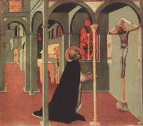
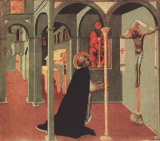

|  |
|---|
Textum Leoninum Romae 1906 editum
et automato translatum a Roberto Busa SJ in taenias magneticas
denuo recognovit Enrique Alarcón atque instruxit


|  |
|---|


[50740] IIIª q. 78 pr. Deinde considerandum est de forma huius sacramenti. Et circa hoc quaeruntur sex. Primo, quae sit forma huius sacramenti. Secundo, utrum sit conveniens forma consecrationis panis. Tertio, utrum sit conveniens forma consecrationis sanguinis. Quarto, de virtute utriusque formae. Quinto, de veritate locutionis. Sexto, de comparatione unius formae ad aliam.
[50741] IIIª q. 78 a. 1 arg. 1 Ad primum sic proceditur. Videtur quod haec non sit forma huius sacramenti, hoc est corpus meum, et, hic est calix sanguinis mei. Illa enim verba videntur pertinere ad formam sacramenti quibus Christus corpus suum et sanguinem consecravit. Sed Christus ante benedixit panem acceptum, et postea dixit, accipite et comedite, hoc est corpus meum, ut habetur Matth. XXVI; et similiter fecit de calice. Ergo praedicta verba non sunt forma huius sacramenti.
[50742] IIIª q. 78 a. 1 arg. 2 Praeterea, Eusebius Emesenus dicit quod invisibilis sacerdos visibiles creaturas in suum corpus convertit, dicens, accipite et comedite, hoc est corpus meum. Ergo totum hoc videtur pertinere ad formam sacramenti. Et eadem ratio est de verbis pertinentibus ad sanguinem.
[50743] IIIª q. 78 a. 1 arg. 3 Praeterea, in forma Baptismi exprimitur persona ministri et actus eius, cum dicitur, ego te baptizo. Sed in praemissis verbis nulla fit mentio de persona ministri, nec de actu eius. Ergo non est conveniens forma sacramenti.
[50744] IIIª q. 78 a. 1 arg. 4 Praeterea, forma sacramenti sufficit ad perfectionem sacramenti, unde sacramentum Baptismi quandoque perfici potest solis verbis formae prolatis, et omnibus aliis praetermissis. Si ergo praedicta verba sunt forma huius sacramenti, videtur quod aliquando possit hoc sacramentum perfici his solis verbis prolatis, et omnibus aliis praetermissis quae in Missa dicuntur. Quod tamen videtur esse falsum, quia, ubi verba alia praetermitterentur, praedicta verba acciperentur ex persona sacerdotis proferentis, in cuius corpus et sanguinem panis et vinum non convertuntur. Non ergo praedicta verba sunt forma huius sacramenti.
[50745] IIIª q. 78 a. 1 s. c. Sed contra est quod Ambrosius dicit, in libro de sacramentis, consecratio fit verbis et sermonibus domini Iesu. Nam per reliqua omnia quae dicuntur, laus Deo defertur, oratione petitur pro populo, pro regibus, pro ceteris. Ubi autem sacramentum conficitur, iam non suis sermonibus sacerdos utitur, sed utitur sermonibus Christi. Ergo sermo Christi hoc conficit sacramentum.
[50746] IIIª q. 78 a. 1 co. Respondeo dicendum quod hoc sacramentum ab aliis sacramentis differt in duobus. Primo quidem quantum ad hoc, quod hoc sacramentum perficitur in consecratione materiae, alia vero sacramenta perficiuntur in usu materiae consecratae. Secundo, quia in aliis sacramentis consecratio materiae consistit solum in quadam benedictione, ex qua materia consecrata accipit instrumentaliter quandam spiritualem virtutem, quae per ministrum, qui est instrumentum animatum, potest ad instrumenta inanimata procedere. Sed in hoc sacramento consecratio materiae consistit in quadam miraculosa conversione substantiae, quae a solo Deo perfici potest. Unde minister in hoc sacramento perficiendo non habet alium actum nisi prolationem verborum. Et quia forma debet esse conveniens rei, ideo forma huius sacramenti differt a formis aliorum sacramentorum in duobus. Primo quidem, quia formae aliorum sacramentorum important usum materiae, puta baptizationem vel consignationem, sed forma huius sacramenti importat solam consecrationem materiae, quae in transubstantiatione consistit; puta cum dicitur, hoc est corpus meum, vel, hic est calix sanguinis mei. Secundo, quia formae aliorum sacramentorum proferuntur ex persona ministri, sive per modum exercentis actum, sicut cum dicitur, ego te baptizo, vel, ego te confirmo; sive per modum imperantis, sicut in sacramento ordinis dicitur, accipe potestatem, etc.; sive per modum deprecantis, sicut cum in sacramento extremae unctionis dicitur, per istam unctionem et nostram intercessionem, et cetera. Sed forma huius sacramenti profertur ex persona ipsius Christi loquentis, ut detur intelligi quod minister in perfectione huius sacramenti nihil agit nisi quod profert verba Christi.
[50747] IIIª q. 78 a. 1 ad 1 Ad primum ergo dicendum quod circa hoc est multiplex opinio. Quidam enim dixerunt quod Christus, qui habebat potestatem excellentiae in sacramentis, absque omni forma verborum hoc sacramentum perfecit; et postea verba protulit sub quibus alii postea consecrarent. Quod videntur sonare verba Innocentii III dicentis, sane dici potest quod Christus virtute divina confecit, et postea formam expressit sub qua posteri benedicerent. Sed contra hoc expresse sunt verba Evangelii, in quibus dicitur quod Christus benedixit, quae quidem benedictio aliquibus verbis facta est. Unde praedicta verba Innocentii sunt opinative magis dicta quam determinative. Quidam autem dixerunt quod benedictio illa facta est quibusdam aliis verbis nobis ignotis. Sed nec hoc stare potest. Quia benedictio consecrationis nunc perficitur per recitationem eorum quae tunc acta sunt. Unde, si tunc per haec verba non est facta consecratio, nec modo fieret. Et ideo alii dixerunt quod illa benedictio eisdem etiam verbis facta est quibus modo fit, sed Christus ea bis protulit, primo quidem secreto, ad consecrandum; secundo manifeste, ad instruendum. Sed nec hoc stare potest. Quia sacerdos consecrat proferens haec verba, non ut a Christo in occulta benedictione dicta, sed ut publice prolata. Unde, cum non habeant vim huiusmodi verba nisi ex Christi prolatione, videtur quod etiam Christus manifeste ea proferens consecraverit. Et ideo alii dixerunt quod Evangelistae non semper eundem ordinem in recitando servaverunt quo res sunt gestae, ut patet per Augustinum, in libro de consensu Evangelistarum. Unde intelligendum est ordinem rei gestae sic exprimi posse, accipiens panem, benedixit dicens, hoc est corpus meum, et deinde fregit et dedit discipulis suis. Sed idem sensus potest esse in verbis Evangelii non mutatis. Nam hoc participium dicens concomitantiam quandam importat verborum prolatorum ad ea quae praecedunt. Non autem oportet quod haec concomitantia intelligatur solum respectu verbi ultimi prolati, quasi Christus tunc ista verba protulerit quando dedit discipulis suis, sed potest intelligi concomitantia respectu totius praecedentis, ut sit sensus, dum benediceret et frangeret et daret discipulis suis, haec verba dixit, accipite et cetera.
[50748] IIIª q. 78 a. 1 ad 2 Ad secundum dicendum quod in his verbis, accipite et comedite, intelligitur usus materiae consecratae, qui non est de necessitate huius sacramenti, ut supra habitum est. Et ideo nec haec verba sunt de substantia formae. Quia tamen ad quandam perfectionem sacramenti pertinet materiae consecratae usus, sicut operatio non est prima, sed secunda perfectio rei; ideo per omnia haec verba exprimitur tota perfectio huius sacramenti. Et hoc modo Eusebius intellexit his verbis confici sacramentum, quantum ad primam et secundam perfectionem ipsius.
[50749] IIIª q. 78 a. 1 ad 3 Ad tertium dicendum quod in sacramento Baptismi minister aliquem actum exercet circa usum materiae, qui est de essentia sacramenti, quod non est in hoc sacramento. Et ideo non est similis ratio.
[50750] IIIª q. 78 a. 1 ad 4 Ad quartum dicendum quod quidam dixerunt hoc sacramentum perfici non posse praedictis verbis prolatis et aliis praetermissis, praecipue quae sunt in canone Missae. Sed hoc patet esse falsum. Tum ex verbis Ambrosii supra inductis. Tum etiam quia canon Missae non est idem apud omnes, nec secundum omnia tempora, sed diversa sunt a diversis apposita. Unde dicendum est quod, si sacerdos sola verba praedicta proferret cum intentione conficiendi hoc sacramentum, perficeretur hoc sacramentum, quia intentio faceret ut haec verba intelligerentur quasi ex persona Christi prolata, etiam si verbis praecedentibus hoc non recitaretur. Graviter tamen peccaret sacerdos sic conficiens hoc sacramentum, utpote ritum Ecclesiae non servans. Nec est simile de Baptismo, quod est sacramentum necessitatis, defectum autem huius sacramenti potest supplere spiritualis manducatio, ut Augustinus dicit.
[50751] IIIª q. 78 a. 2 arg. 1 Ad secundum sic proceditur. Videtur quod haec non sit conveniens forma consecrationis panis, hoc est corpus meum. Per formam enim sacramenti debet exprimi sacramenti effectus. Sed effectus qui fit in consecratione panis, est conversio substantiae panis in corpus Christi, quae magis exprimitur per hoc verbum fit, quam per hoc verbum est. Ergo in forma consecrationis deberet dici, hoc fit corpus meum.
[50752] IIIª q. 78 a. 2 arg. 2 Praeterea, Ambrosius dicit, in libro de sacramentis, sermo Christi hoc conficit sacramentum. Quis sermo Christi? Hic quo facta sunt omnia, jussit dominus et facta sunt caeli et terra. Ergo et forma huius sacramenti convenientior esset per verbum imperativum, ut diceretur, hoc sit corpus meum.
[50753] IIIª q. 78 a. 2 arg. 3 Praeterea, per subiectum huius locutionis importatur illud quod convertitur, sicut per praedicatum importatur conversionis terminus. Sed, sicut est determinatum id in quod fit conversio, non enim fit conversio nisi in corpus Christi; ita est determinatum id quod convertitur, non enim convertitur in corpus Christi nisi panis. Ergo, sicut ex parte praedicati ponitur nomen, ita ex parte subiecti debet poni nomen, ut dicatur, hic panis est corpus meum.
[50754] IIIª q. 78 a. 2 arg. 4 Praeterea, sicut id in quod terminatur conversio est determinatae naturae, quia est corpus; ita etiam est determinatae personae. Ergo, ad determinandam personam, debet dici, hoc est corpus Christi.
[50755] IIIª q. 78 a. 2 arg. 5 Praeterea, in verbis formae non debet poni aliquid quod non sit de substantia eius. Inconvenienter ergo additur in quibusdam libris haec coniunctio enim, quae non est de substantia formae.
[50756] IIIª q. 78 a. 2 s. c. Sed contra est quod dominus hac forma in consecrando est usus, ut patet Matth. XXVI.
[50757] IIIª q. 78 a. 2 co. Respondeo dicendum quod haec est conveniens forma consecrationis panis. Dictum est enim quod haec consecratio consistit in conversione substantiae panis in corpus Christi. Oportet autem formam sacramenti significare id quod in sacramento efficitur. Unde et forma consecrationis panis debet significare ipsam conversionem panis in corpus Christi. In qua tria considerantur, scilicet ipsa conversio, et terminus a quo, et terminus ad quem. Conversio autem potest considerari dupliciter, uno modo, ut in fieri; alio modo, ut in facto esse. Non autem debuit significari conversio in hac forma ut in fieri, sed ut in facto esse. Primo quidem, quia haec conversio non est successiva, ut supra habitum est, sed instantanea, in huiusmodi autem mutationibus fieri non est nisi factum esse. Secundo, quia ita se habent formae sacramentales ad significandum effectum sacramenti, sicut se habent formae artificiales ad repraesentandum effectum artis. Forma autem artificialis est similitudo ultimi effectus in quem fertur intentio artificis, sicut forma artis in mente aedificatoris est forma domus aedificatae principaliter, aedificationis autem per consequens. Unde et in hac forma debet exprimi conversio ut in facto esse, ad quod fertur intentio. Et quia ipsa conversio exprimitur in hac forma ut in facto esse, necesse est quod extrema conversionis significentur ut se habent in facto esse conversionis. Tunc autem terminus in quem habet propriam naturam suae substantiae, sed terminus a quo non manet secundum suam substantiam, sed solum secundum accidentia, quibus sensui subiacet, et ad sensum determinari potest. Unde convenienter terminus conversionis a quo exprimitur per pronomen demonstrativum relatum ad accidentia sensibilia, quae manent. Terminus autem ad quem exprimitur per nomen significans naturam eius in quod fit conversio, quod quidem est totum corpus Christi, et non sola caro eius, ut dictum est. Unde haec forma est convenientissima, hoc est corpus meum.
[50758] IIIª q. 78 a. 2 ad 1 Ad primum ergo dicendum quod fieri non est ultimus effectus huius consecrationis, sed factum esse ut dictum est. Et ideo hoc potius exprimi debet in forma.
[50759] IIIª q. 78 a. 2 ad 2 Ad secundum dicendum quod sermo Dei operatus est in creatione rerum, qui etiam operatur in hac consecratione, aliter tamen et aliter. Nam hic operatur sacramentaliter, idest secundum vim significationis. Et ideo oportet in hoc sermone significari ultimum effectum consecrationis per verbum substantivum indicativi modi et praesentis temporis. Sed in creatione rerum operatus est solum effective, quae quidem efficientia est per imperium suae sapientiae. Et ideo in creatione rerum exprimitur sermo dominicus per verbum imperativi modi, secundum illud Gen. I, fiat lux, et facta est lux.
[50760] IIIª q. 78 a. 2 ad 3 Ad tertium dicendum quod terminus a quo in ipso facto esse conversionis non retinet naturam suae substantiae, sicut terminus ad quem. Et ideo non est simile.
[50761] IIIª q. 78 a. 2 ad 4 Ad quartum dicendum quod per hoc pronomen meum, quod includit demonstrationem primae personae, quae est persona loquentis, sufficienter exprimitur persona Christi, ex cuius persona haec proferuntur, ut dictum est.
[50762] IIIª q. 78 a. 2 ad 5 Ad quintum dicendum quod haec coniunctio enim apponitur in hac forma secundum consuetudinem Romanae Ecclesiae a beato Petro apostolo derivatam. Et hoc propter continuationem ad verba praecedentia. Et ideo non est de forma, sicut nec praecedentia formam.
[50763] IIIª q. 78 a. 3 arg. 1 Ad tertium sic proceditur. Videtur quod haec non sit conveniens forma consecrationis vini, hic est calix sanguinis mei, novi et aeterni testamenti, mysterium fidei, qui pro vobis et pro multis effundetur in remissionem peccatorum. Sicut enim panis convertitur in corpus Christi ex vi consecrationis, ita et vinum in sanguinem Christi, sicut ex praedictis patet. Sed in forma consecrationis panis ponitur in recto corpus Christi, nec aliquid aliud additur. Inconvenienter ergo in hac forma ponitur sanguis Christi in obliquo, et additur calix in recto, cum dicitur, hic est calix sanguinis mei.
[50764] IIIª q. 78 a. 3 arg. 2 Praeterea, non sunt maioris efficaciae verba quae proferuntur in consecratione panis quam ea quae proferuntur in consecratione vini, cum utraque sint verba Christi. Sed statim dicto, hoc est corpus meum, est perfecta consecratio panis. Ergo statim cum dictum est, hic est calix sanguinis mei, est perfecta consecratio sanguinis. Et ita ea quae consequuntur non videntur esse de substantia formae, praesertim cum pertineant ad proprietates huius sacramenti.
[50765] IIIª q. 78 a. 3 arg. 3 Praeterea, testamentum novum pertinere videtur ad internam inspirationem, ut patet ex hoc quod apostolus, ad Heb. VIII, introducit verba quae habentur in Ierem. XXXI, consummabo super domum Israel testamentum novum, dando leges meas in mentibus eorum. Sacramentum autem exterius visibiliter agitur. Inconvenienter ergo in forma sacramenti dicitur, novi testamenti.
[50766] IIIª q. 78 a. 3 arg. 4 Praeterea, novum dicitur aliquid ex eo quod est prope principium sui esse. Aeternum autem non habet principium sui esse. Ergo inconvenienter dicitur novi et aeterni, quia videtur contradictionem implicare.
[50767] IIIª q. 78 a. 3 arg. 5 Praeterea, occasiones erroris sunt hominibus subtrahendae, secundum illud Isaiae LVII, auferte offendicula de via populi mei. Sed quidam erraverunt aestimantes mystice solum esse corpus et sanguinem Christi in hoc sacramento. Ergo in hac forma inconvenienter ponitur mysterium fidei.
[50768] IIIª q. 78 a. 3 arg. 6 Praeterea, supra dictum est quod, sicut Baptismus est sacramentum fidei, ita Eucharistia est sacramentum caritatis. Ergo in hac forma magis debuit poni caritas quam fides.
[50769] IIIª q. 78 a. 3 arg. 7 Praeterea, totum hoc sacramentum, et quantum ad corpus et quantum ad sanguinem, est memoriale dominicae passionis, secundum illud I Cor. XI, quotiescumque manducabitis panem hunc et calicem bibetis, mortem domini annuntiabitis. Non ergo magis debuit in forma consecrationis sanguinis fieri mentio de passione Christi et de eius fructu, quam in forma consecrationis corporis, praesertim cum, Luc. XXII, dominus dixerit, hoc est corpus meum, quod pro vobis tradetur.
[50770] IIIª q. 78 a. 3 arg. 8 Praeterea, passio Christi, ut supra habitum est, ad sufficientiam profuit omnibus, quantum vero ad efficaciam profuit multis. Debuit ergo dici quod effundetur pro omnibus, aut pro multis, sine hoc quod adderetur pro vobis.
[50771] IIIª q. 78 a. 3 arg. 9 Praeterea, verba quibus hoc sacramentum conficitur, efficaciam habent ex institutione Christi. Sed nullus Evangelista recitat Christum haec omnia verba dixisse. Ergo non est conveniens forma consecrationis vini.
[50772] IIIª q. 78 a. 3 s. c. Sed contra est quod Ecclesia, ab apostolis instructa, utitur hac forma in consecratione vini.
[50773] IIIª q. 78 a. 3 co. Respondeo dicendum quod circa hanc formam est duplex opinio. Quidam enim dixerunt quod de substantia formae huius est hoc solum quod dicitur, hic est calix sanguinis mei, non autem ea quae sequuntur. Sed hoc videtur inconveniens, quia ea quae sequuntur, sunt quaedam determinationes praedicati, idest sanguinis Christi; unde pertinent ad integritatem locutionis. Et propter hoc sunt alii qui melius dicunt quod omnia sequentia sunt de substantia formae, usque ad hoc quod postea sequitur, hoc quotiescumque feceritis, quae pertinent ad usum huius sacramenti, unde non sunt de substantia formae. Et inde est quod sacerdos eodem ritu et modo, scilicet tenendo calicem in manibus, omnia haec verba profert. Lucae etiam XXII interponuntur verba sequentia verbis primis, cum dicitur, hic calix novum testamentum est in sanguine meo. Dicendum est ergo quod omnia praedicta verba sunt de substantia formae, sed per prima verba, hic est calix sanguinis mei, significatur ipsa conversio vini in sanguinem, eo modo quo dictum est in forma consecrationis panis; per verba autem sequentia designatur virtus sanguinis effusi in passione, quae operatur in hoc sacramento. Quae quidem ad tria ordinatur. Primo quidem, et principaliter, ad adipiscendam aeternam hereditatem, secundum illud Heb. X, habemus fiduciam in introitu sanctorum per sanguinem eius. Et ad hoc designandum dicitur, novi testamenti et aeterni. Secundo, ad iustitiam gratiae, quae est per fidem, secundum illud Rom. III, quem proposuit Deus propitiatorem per fidem in sanguine eius, ut sit ipse iustus, et iustificans eum qui ex fide est Iesu Christi. Et quantum ad hoc subditur, mysterium fidei. Tertio autem, ad removendum impedimenta utriusque praedictorum, scilicet peccata, secundum illud Heb. IX, sanguis Christi emundabit conscientias nostras ab operibus mortuis, idest a peccatis. Et quantum ad hoc subditur, qui pro vobis et pro multis aliis effundetur in remissionem peccatorum.
[50774] IIIª q. 78 a. 3 ad 1 Ad primum ergo dicendum quod, cum dicitur, hic est calix sanguinis mei, est locutio figurativa, et potest dupliciter intelligi. Uno modo, secundum metonymiam, quia ponitur continens pro contento, ut sit sensus, hic est sanguis meus contentus in calice. De quo fit hic mentio, quia sanguis Christi in hoc sacramento consecratur inquantum est potus fidelium, quod non importatur in ratione sanguinis, et ideo oportuit hic designari per vas huic usui accommodatum. Alio modo potest intelligi secundum metaphoram, prout per calicem similitudinarie intelligitur passio Christi, quae ad similitudinem calicis inebriat, secundum illud Thren. III, replevit me amaritudinibus, inebriavit me absynthio, unde et ipse dominus passionem suam calicem nominat, Matth. XXVI, dicens, transeat a me calix iste; ut sit sensus, hic est calix passionis meae. De qua fit mentio in sanguine seorsum a corpore consecrato, quia separatio sanguinis a corpore fuit per passionem.
[50775] IIIª q. 78 a. 3 ad 2 Ad secundum dicendum quod quia, ut dictum est, sanguis seorsum consecratus expresse passionem Christi repraesentat, ideo potius in consecratione sanguinis fit mentio de effectu passionis quam in consecratione corporis, quod est passionis subiectum. Quod etiam designatur in hoc quod dominus dicit, quod pro vobis tradetur, quasi dicat, quod pro vobis passioni subiicietur.
[50776] IIIª q. 78 a. 3 ad 3 Ad tertium dicendum quod testamentum est dispositio hereditatis. Hereditatem autem caelestem Deus disposuit hominibus dandam per virtutem sanguinis Iesu Christi, quia, ut dicitur Heb. IX, ubi est testamentum, mors necesse est intercedat testatoris. Sanguis autem Christi dupliciter est hominibus exhibitus. Primo quidem, in figura, quod pertinet ad vetus testamentum. Et ideo apostolus ibidem concludit, unde nec primum testamentum sine sanguine dedicatum est, quod patet ex hoc quod, sicut dicitur Exod. XXIV, lecto omni mandato legis a Moyse, omnem populum aspersit, dicens, hic est sanguis testamenti quod mandavit ad vos Deus. Secundo autem est exhibitus in rei veritate, quod pertinet ad novum testamentum. Et hoc est quod apostolus ibidem praemittit, dicens, ideo novi testamenti mediator est Christus, ut, morte intercedente, repromissionem accipiant qui vocati sunt aeternae hereditatis. Dicitur ergo hic sanguis novi testamenti, quia iam non in figura, sed in veritate exhibetur. Unde subditur, qui pro vobis effundetur. Interna autem inspiratio ex sanguinis virtute procedit secundum quod passione Christi iustificamur.
[50777] IIIª q. 78 a. 3 ad 4 Ad quartum dicendum quod hoc testamentum est novum ratione exhibitionis. Dicitur autem aeternum, tam ratione aeternae Dei praeordinationis; quam etiam ratione aeternae hereditatis, quae per hoc testamentum disponitur. Ipsa etiam persona Christi, cuius sanguine testamentum disponitur, est aeterna.
[50778] IIIª q. 78 a. 3 ad 5 Ad quintum dicendum quod mysterium hic ponitur, non quidem ad excludendum rei veritatem, sed ad ostendendum occultationem. Quia et ipse sanguis Christi occulto modo est in hoc sacramento; et ipsa passio Christi occulte fuit figurata in veteri testamento.
[50779] IIIª q. 78 a. 3 ad 6 Ad sextum dicendum quod dicitur sacramentum fidei, quasi fidei obiectum, quia quod sanguis Christi secundum rei veritatem sit in hoc sacramento, sola fide tenetur. Ipsa etiam passio Christi per fidem iustificat. Baptismus autem dicitur sacramentum fidei quia est quaedam fidei protestatio. Hoc autem est sacramentum caritatis quasi figurativum et effectivum.
[50780] IIIª q. 78 a. 3 ad 7 Ad septimum dicendum quod, sicut dictum est, sanguis seorsum consecratus a corpore expressius repraesentat passionem Christi. Et ideo in consecratione sanguinis fit mentio de passione Christi et fructu ipsius, potius quam in consecratione corporis.
[50781] IIIª q. 78 a. 3 ad 8 Ad octavum dicendum quod sanguis passionis Christi non solum habet efficaciam in Iudaeis electis, quibus exhibitus est sanguis veteris testamenti, sed etiam in gentilibus; nec solum in sacerdotibus, qui hoc efficiunt sacramentum, vel aliis qui sumunt, sed etiam in illis pro quibus offertur. Et ideo signanter dicit, pro vobis Iudaeis, et pro multis, scilicet gentilibus, vel, pro vobis manducantibus, et pro multis pro quibus offertur.
[50782] IIIª q. 78 a. 3 ad 9 Ad nonum dicendum quod Evangelistae non intendebant tradere formas sacramentorum, quas in primitiva Ecclesia oportebat esse occultas, ut dicit Dionysius, in fine ecclesiasticae hierarchiae. Sed intenderunt historiam de Christo texere. Et tamen omnia haec verba fere ex diversis Scripturae locis accipi possunt. Nam quod dicitur, hic est calix, habetur Luc. XXII et I Cor. XI. Matthaei autem XXVI dicitur, hic est sanguis meus novi testamenti, qui pro multis effundetur in remissionem peccatorum. Quod autem additur, aeterni, et iterum, mysterium fidei, ex traditione domini habetur, quae ad Ecclesiam per apostolos pervenit, secundum illud I Cor. XI, ego accepi a domino quod et tradidi vobis.
[50783] IIIª q. 78 a. 4 arg. 1 Ad quartum sic proceditur. Videtur quod praedictis verbis formarum non insit aliqua vis creata effectiva consecrationis. Dicit enim Damascenus, in IV libro, sola virtute spiritus sancti fit conversio panis in corpus Christi. Sed virtus spiritus sancti est virtus increata. Ergo nulla virtute creata horum verborum conficitur sacramentum hoc.
[50784] IIIª q. 78 a. 4 arg. 2 Praeterea, opera miraculosa non fiunt aliqua virtute creata, sed sola virtute divina, ut in prima parte habitum est. Sed conversio panis et vini in corpus et sanguinem Christi est opus non minus miraculosum quam creatio rerum, vel etiam formatio corporis Christi in utero virginali, quae quidem nulla virtute creata fieri potuerunt. Ergo neque hoc sacramentum consecratur virtute creata aliqua dictorum verborum.
[50785] IIIª q. 78 a. 4 arg. 3 Praeterea, praedicta verba non sunt simplicia, sed ex multis composita; nec simul, sed successive proferuntur. Conversio autem praedicta, ut supra dictum est, fit in instanti, unde oportet quod fiat per simplicem virtutem. Non ergo fit per virtutem horum verborum.
[50786] IIIª q. 78 a. 4 s. c. Sed contra est quod Ambrosius dicit, in libro de sacramentis, si tanta est vis in sermone domini Iesu ut inciperet esse quod non erat, quanto magis operativus est ut sint quae erant, et in aliud commutentur? Et sic quod erat panis ante consecrationem, iam corpus Christi est post consecrationem, quia sermo Christi creaturam mutat.
[50787] IIIª q. 78 a. 4 co. Respondeo dicendum quod quidam dixerunt nullam virtutem creatam esse nec in praedictis verbis ad transubstantiationem faciendam, nec etiam in aliis sacramentorum formis, vel etiam in ipsis sacramentis ad inducendos sacramentorum effectus. Quod, sicut supra dictum est, et dictis sanctorum repugnat, et derogat dignitati sacramentorum novae legis. Unde, cum hoc sacramentum sit prae ceteris dignius, sicut supra dictum est, consequens est quod in verbis formalibus huius sacramenti sit quaedam virtus creata ad conversionem huius sacramenti faciendam, instrumentalis tamen, sicut et in aliis sacramentis, sicut supra dictum est. Cum enim haec verba ex persona Christi proferantur, ex eius mandato consequuntur virtutem instrumentalem a Christo, sicut et cetera eius facta vel dicta habent instrumentaliter salutiferam virtutem, ut supra habitum est.
[50788] IIIª q. 78 a. 4 ad 1 Ad primum ergo dicendum quod, cum dicitur sola virtute spiritus sancti panem in corpus Christi converti, non excluditur virtus instrumentalis quae est in forma huius sacramenti, sicut, cum dicitur quod solus faber facit cultellum, non excluditur virtus martelli.
[50789] IIIª q. 78 a. 4 ad 2 Ad secundum dicendum quod opera miraculosa nulla creatura potest facere quasi agens principale, potest tamen ea facere instrumentaliter, sicut ipse tactus manus Christi sanavit leprosum. Et per hunc modum verba eius convertunt panem in corpus Christi. Quod quidem non potuit in conceptione corporis Christi, qua corpus Christi formabatur, ut aliquid a corpore Christi procedens haberet instrumentalem virtutem ad ipsius corporis formationem. In creatione etiam non fuit aliquod extremum in quod instrumentalis actio creaturae posset terminari. Unde non est simile.
[50790] IIIª q. 78 a. 4 ad 3 Ad tertium dicendum quod praedicta verba quibus fit consecratio, sacramentaliter operantur. Unde vis conversiva quae est in formis horum sacramentorum, sequitur significationem, quae in prolatione ultimae dictionis terminatur. Et ideo in ultimo instanti prolationis verborum praedicta verba consequuntur hanc virtutem, in ordine tamen ad praecedentia. Et haec virtus est simplex ratione significati, licet in ipsis verbis exterius prolatis fit quaedam compositio.
[50791] IIIª q. 78 a. 5 arg. 1 Ad quintum sic proceditur. Videtur quod praedictae locutiones non sunt verae. Cum enim dicitur, hoc est corpus meum, ly hoc est demonstrativum substantiae. Sed secundum praedicta, quando profertur hoc pronomen hoc, adhuc est substantia panis, quia transubstantiatio fit in ultimo prolationis verborum. Sed haec est falsa, panis est corpus Christi. Ergo etiam haec est falsa, hoc est corpus meum.
[50792] IIIª q. 78 a. 5 arg. 2 Praeterea, hoc pronomen hoc facit demonstrationem ad sensum. Sed species sensibiles quae sunt in hoc sacramento neque sunt ipsum corpus Christi, neque sunt accidentia corporis Christi. Ergo haec locutio non potest esse vera, hoc est corpus meum.
[50793] IIIª q. 78 a. 5 arg. 3 Praeterea, haec verba, sicut supra dictum est, sua significatione efficiunt conversionem panis in corpus Christi. Sed causa effectiva praeintelligitur effectui. Ergo significatio horum verborum praeintelligitur conversioni panis in corpus Christi. Sed ante conversionem haec est falsa, hoc est corpus meum. Ergo simpliciter est iudicandum quod sit falsa. Et eadem ratio est de hac locutione, hic est calix sanguinis mei et cetera.
[50794] IIIª q. 78 a. 5 s. c. Sed contra est quod haec verba proferuntur ex persona Christi, qui de se dicit, Ioan. XIV, ego sum veritas.
[50795] IIIª q. 78 a. 5 co. Respondeo dicendum quod circa hoc multiplex fuit opinio. Quidam enim dixerunt quod in hac locutione, hoc est corpus meum, haec dictio hoc importat demonstrationem ut conceptam, non ut exercitam, quia tota ista locutio sumitur materialiter, cum recitative proferatur; recitat enim sacerdos Christum dixisse, hoc est corpus meum. Sed hoc stare non potest. Quia secundum hoc, verba non applicarentur ad materiam corporalem praesentem, et ita non perficeretur sacramentum, dicit enim Augustinus, super Ioan., accedit verbum ad elementum et fit sacramentum. Et ex hoc totaliter non evitatur difficultas huius quaestionis, quia eaedem rationes manent circa primam prolationem qua Christus haec verba protulit; quia manifestum est quod non materialiter, sed significative sumebantur. Et ideo dicendum est quod etiam quando proferuntur a sacerdote, significative, et non tantum materialiter accipiuntur. Nec obstat quod sacerdos etiam recitative profert quasi a Christo dicta. Quia propter infinitam virtutem Christi, sicut ex contactu carnis suae vis regenerativa pervenit non solum ad illas aquas quae Christum tetigerunt, sed ad omnes ubique terrarum per omnia futura saecula; ita etiam ex prolatione ipsius Christi haec verba virtutem consecrativam sunt consecuta a quocumque sacerdote dicantur, ac si Christus ea praesentialiter proferret. Et ideo alii dixerunt quod haec dictio hoc in hac locutione facit demonstrationem, non ad sensum, sed ad intellectum, ut sit sensus, hoc est corpus meum, idest, significatum per hoc est corpus meum. Sed nec hoc stare potest. Quia, cum in sacramentis hoc efficiatur quod significatur, non fieret per hanc formam ut corpus Christi sit in hoc sacramento secundum veritatem, sed solum sicut in signo. Quod est haereticum, ut supra dictum est. Et ideo alii dixerunt quod haec dictio hoc facit demonstrationem ad sensum, sed intelligitur haec demonstratio non pro illo instanti locutionis quo profertur haec dictio, sed pro ultimo instanti locutionis, sicut, cum aliquis dicit, nunc taceo, hoc adverbium nunc facit demonstrationem pro instanti immediate sequenti locutionem; est enim sensus, statim dictis his verbis, taceo. Sed nec hoc stare potest. Quia secundum hoc, huius locutionis est sensus, corpus meum est corpus meum. Quod praedicta locutio non facit, quia hoc fuit etiam ante prolationem verborum. Unde neque hoc praedicta locutio significat. Et ideo aliter dicendum est quod, sicut praedictum est, haec locutio habet virtutem factivam conversionis panis in corpus Christi. Et ideo comparatur ad alias locutiones, quae habent solum vim significativam et non factivam, sicut comparatur conceptio intellectus practici, quae est factiva rei, conceptioni intellectus nostri speculativi, quae est accepta a rebus, nam voces sunt signa intellectuum, secundum philosophum. Et ideo, sicut conceptio intellectus practici non praesupponit rem conceptam, sed facit eam, ita veritas huius locutionis non praesupponit rem significatam, sed facit eam, sic enim se habet verbum Dei ad res factas per verbum. Haec autem conversio non fit successive, sed in instanti, sicut dictum est. Et ideo oportet quidem intelligere praedictam locutionem secundum ultimum instans prolationis verborum, non tamen ita quod praesupponatur ex parte subiecti id quod est terminus conversionis, scilicet quod corpus Christi sit corpus Christi; neque etiam illud quod fuit ante conversionem, scilicet panis; sed id quod communiter se habet quantum ad utrumque, scilicet contentum in generali sub istis speciebus. Non enim faciunt haec verba quod corpus Christi sit corpus Christi; neque quod panis sit corpus Christi; sed quod contentum sub his speciebus, quod prius erat panis, sit corpus Christi. Et ideo signanter non dicit dominus, hic panis est corpus meum, quod esset secundum intellectum secundae opinionis; neque, hoc corpus meum est corpus meum, quod esset secundum intellectum tertiae; sed in generali, hoc est corpus meum, nullo nomine apposito ex parte subiecti, sed solo pronomine, quod significat substantiam in communi sine qualitate, idest forma determinata.
[50796] IIIª q. 78 a. 5 ad 1 Ad primum ergo dicendum quod haec dictio hoc demonstrat substantiam, sed absque determinatione propriae naturae, sicut dictum est.
[50797] IIIª q. 78 a. 5 ad 2 Ad secundum dicendum quod hoc pronomen hoc non demonstrat ipsa accidentia, sed substantiam sub accidentibus contentam, quae primo fuit panis, et postea est corpus Christi, quod, licet non informetur his accidentibus, tamen sub eis continetur.
[50798] IIIª q. 78 a. 5 ad 3 Ad tertium dicendum quod significatio huius locutionis praeintelligitur rei significatae ordine naturae, sicut causa naturaliter est prior effectu, non tamen ordine temporis, quia haec causa simul habet secum suum effectum. Et hoc sufficit ad veritatem locutionis.
[50799] IIIª q. 78 a. 6 arg. 1 Ad sextum sic proceditur. Videtur quod forma consecrationis panis non consequatur effectum suum quousque perficiatur forma consecrationis vini. Sicut enim per consecrationem panis incipit esse corpus Christi sub hoc sacramento, ita per consecrationem vini incipit esse sanguis. Si ergo verba consecrationis panis haberent effectum suum ante consecrationem vini, sequeretur quod in hoc sacramento inciperet esse corpus Christi exsangue. Quod est inconveniens.
[50800] IIIª q. 78 a. 6 arg. 2 Praeterea, unum sacramentum unum habet complementum, unde, licet in Baptismo sint tres immersiones, non tamen prima immersio consequitur suum effectum quousque tertia fuerit terminata. Sed totum hoc sacramentum est unum, ut supra dictum est. Ergo verba quibus consecratur panis, non consequuntur suum effectum sine verbis sacramentalibus quibus consecratur vinum.
[50801] IIIª q. 78 a. 6 arg. 3 Praeterea, in ipsa forma consecrationis panis sunt plura verba, quorum prima non consequuntur effectum nisi prolato ultimo, sicut dictum est. Ergo, pari ratione, nec verba quibus consecratur corpus Christi habent effectum, nisi prolatis verbis quibus sanguis Christi consecratur.
[50802] IIIª q. 78 a. 6 s. c. Sed contra est quod, statim dictis verbis consecrationis panis, hostia consecrata proponitur populo adoranda. Quod non fieret si non esset ibi corpus Christi, quia hoc ad idololatriam pertineret. Ergo verba consecrationis suum effectum consequuntur antequam proferantur verba consecrationis vini.
[50803] IIIª q. 78 a. 6 co. Respondeo dicendum quod quidam antiqui doctores dixerunt quod hae duae formae, scilicet consecrationis panis et vini, se invicem expectant in agendo, ita scilicet quod prima non perficit suum effectum antequam secunda proferatur. Sed hoc stare non potest. Quia, sicut dictum est, ad veritatem huius locutionis, hoc est corpus meum, requiritur, propter verbum praesentis temporis, quod res significata simul tempore sit cum ipsa significatione locutionis, alioquin, si in futurum expectaretur res significata, apponeretur verbum futuri temporis, non autem verbum praesentis; ita scilicet quod non diceretur, hoc est corpus meum, sed, hoc erit corpus meum. Significatio autem huius locutionis completur statim completa prolatione horum verborum. Et ideo oportet rem significatam statim adesse, quae quidem est effectus huius sacramenti, alioquin locutio non esset vera. Est etiam haec positio contra ritum Ecclesiae, quae statim post prolationem verborum corpus Christi adorat. Unde dicendum est quod prima forma non expectat secundam in agendo, sed statim habet suum effectum.
[50804] IIIª q. 78 a. 6 ad 1 Ad primum ergo dicendum quod ex hac ratione videntur fuisse decepti illi qui praedictam positionem posuerunt. Unde intelligendum est quod, facta consecratione panis, est quidem corpus Christi ibi ex vi sacramenti, et sanguis ex reali concomitantia; sed postmodum, post consecrationem vini, fit ibi e converso sanguis Christi ex vi sacramenti, corpus autem Christi ex reali concomitantia; ita quod totus Christus est sub utraque specie, sicut supra dictum est.
[50805] IIIª q. 78 a. 6 ad 2 Ad secundum dicendum quod hoc sacramentum est unum perfectione, sicut supra dictum est, inquantum scilicet constituitur ex duobus, scilicet ex cibo et potu, quorum utrumque per se habet suam perfectionem. Sed tres immersiones Baptismi ordinantur ad unum simplicem effectum. Et ideo non est simile.
[50806] IIIª q. 78 a. 6 ad 3 Ad tertium dicendum quod diversa verba quae sunt in forma consecrationis panis, constituunt veritatem unius locutionis, non autem verba diversarum formarum. Et ideo non est simile.